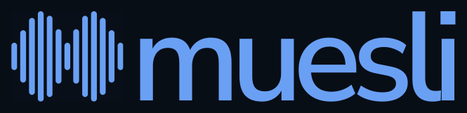
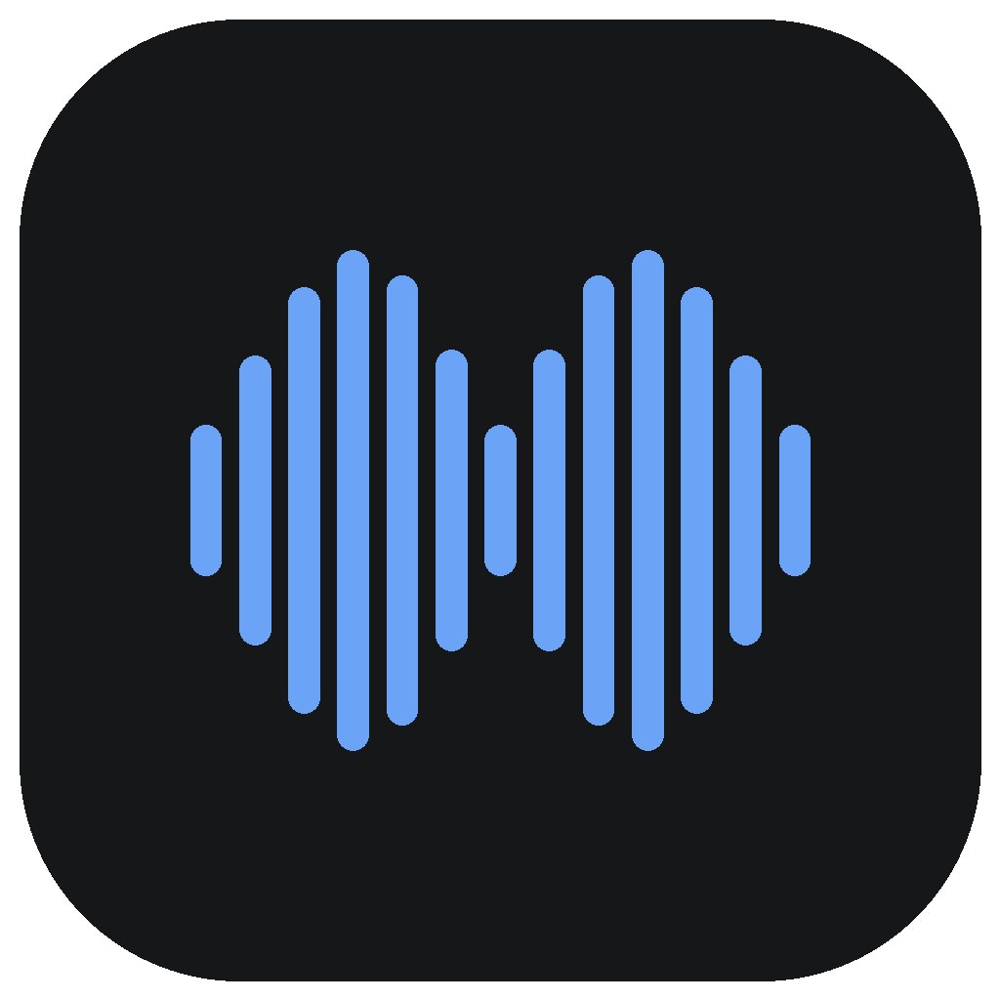
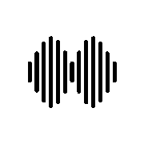

Native macOS components and official brand assets
Adaptive colors with dark and light mode variants. Built on layered backgrounds for depth perception.
| Token | Dark Mode | Light Mode | Usage |
|---|---|---|---|
textPrimary | White 92% | Black 88% | Headings, body text |
textSecondary | White 74% | Black 66% | Labels, metadata |
textTertiary | White 56% | Black 55% | Hints, disabled, timestamps |
Fills keep the raw saved accent and semantic hues. Text and glyphs use a role chosen for the surface they sit on, so every enabled label reaches 4.5:1 and state glyphs 3:1 in Light, Dark and Ultra Dark.
| Role | Rule | Ultra Dark |
|---|---|---|
accent / toggleAccent | Raw saved accent (adaptive blue by default) for fills, selection and switches | Actions white; switches keep the saved accent |
onAccent | Black or white, whichever contrasts more with the resolved fill (Default: white in Light, black in Dark) | Black |
accentText | Same-hue shade of the saved accent, deepened in Light and lightened in Dark only until it reaches 4.5:1 on every neutral surface and on accent tints up to the pressed state. Never a fill. | White |
accentStateShade | Hover/pressed overlay on accent fills (8% / 16%), moving the fill away from its label | Black |
onSuccess | Dark ink on success fills; never onAccent | Same |
recordingFill | #DC2626 with white labels for labelled Stop/Record; recording stays for dots, waveforms and badges | Same |
destructiveText | #B91C1C / #F87171 for destructive labels, trash glyphs and errors, including red tints up to 16% | #F87171 |
successText / warningText | #065F46 / #92400E in Light; #34D399 / #F59E0B in Dark | Dark values |
joinAction | Join split buttons in the dashboard and notification, with dark ink | Same |
Roles are derived once when the accent changes and cached per swatch; rendering does no contrast math. Native controls (switches, popups, alerts, bordered-prominent buttons) keep their system rendering and are verified on screen.
Nunito Sans is the standard across onboarding, chat, settings and auxiliary windows. Use MuesliTheme for SwiftUI and AppFonts for AppKit. The seven bundled faces are loaded locally in this reference. SF Symbols retain system fonts; code retains a system monospaced face.
Use layered surfaces, restrained borders and rounded controls. Keep labels at 14pt and necessary helper copy at 12pt; omit repeated subtitles. Use 275pt control columns and stack below labels when content is narrower than 540pt. Avoid decorative rendering cost and preserve focus, IME and undo.
Ultra Dark: black backgrounds, white primary accents, stronger text and borders. Toggles retain the saved accent color; status colors retain their meaning. Only Settings → Appearance offers Ultra Dark. Settings order: General, Dictations, Meetings, Appearance, Experimental. Computer Use, Quill and Cotypist belong in Experimental.
| Variant | Usage | Example |
|---|---|---|
| Monospaced 13pt | Timestamps; transcript editing uses the reading style | 2026-03-16 09:41 |
| Nunito Sans 24pt Semibold | Hotkey display in onboarding | Left Cmd |
| Monospaced 12pt Semibold | Version display | v0.4.0 |
4pt base grid. Seven increments cover all layout needs.
SF Symbols for UI chrome, animated waveform bars for the floating indicator, official assets for branding. Symbol names below are authoritative; browser emoji are illustrative placeholders, not SF Symbol renderings.
Timeline (clock) leads: one chronological feed combining dictations and meetings. The Meetings row expands to reveal meeting folders, with children indented as a group (position carries nesting, not icon size). Chat follows Meetings; Insights is a first-class sidebar item. Models, Shortcuts, Settings, and About sit in the bottom section. The rail is fixed at 240pt expanded and collapses to a 68pt icon strip via the header toggle. Navigation labels are 14pt, medium normally and semibold when selected. Milestone-gated sharing links live in About.
Expanded row icons use 14pt medium; collapsed rail icons use 16pt medium. Meetings uses person.wave.2 expanded and person.2 collapsed. Icons are outline-only; .fill is reserved for selection state, keeping ink weight even across the column. The icon column is center-aligned and starts at the search field's inner padding, so row glyphs sit directly under the magnifier.
Source-audited against origin/main at e1b52117, October 31, 2026. These are static browser specimens. Validate native rendering, motion, and pointer behavior in the app before treating them as pixel-accurate screenshots.
| Surface / state | Current native presentation |
|---|---|
| Classic idle | MenuBarIconRenderer resting mark; optional compact hotkey cue. Hover reveals the configured start prompt. |
| Minimal idle | A resting grip; hover reveals the shortcut pill. The same active capsule renderer is used while recording. |
| Preparing / waiting | Five procedural standing bars with a timed waiting animation. This is not microphone amplitude. |
| Recording dictation | Five standing bars driven by smoothed microphone amplitude. Left cancel area and right stop square. |
| Recording meeting, floating | Standing bars with explicit xmark discard and stop.fill buttons. The waveform body is draggable; clicking it does not stop a meeting. |
| Transcribing | wand.and.sparkles with the current title; repeating wiggle on macOS 15+. Quill instruction progress uses its feather and spinner. |
| Notch recording | Seven standing bars; hands-free mode uses a 15-sample scrolling waveform. Reduce Motion uses standing bars and a slower update cadence. |
| Notch meeting controls | xmark discard in the left wing; pause.fill / play.fill and stop.fill in the right wing. Paused content shows pause.fill. |
| Notch processing / outcome | Mini progress indicator while active; circle.fill for success or exclamationmark.triangle.fill for failure. |
Use the supplied artwork from muesli.works/brand. The waveform geometry, lowercase lettering, spacing, and proportions are already built into the files. All previews below load local assets and work offline.

The original blue waveform on charcoal. Use for app listings, avatars, and product mentions.
Download PNG
Black waveform on white. Use on light backgrounds.
Download SVGWhite waveform on black. Use on dark backgrounds.
Download SVGOur deep blue waveform and lowercase muesli wordmark on a transparent background.
Download SVGBlack waveform and wordmark on a transparent background for light surfaces.
Download SVGWhite waveform and wordmark on a transparent background for dark surfaces.
Download SVGLight blue waveform and lowercase muesli wordmark on #080e16, matching the site’s primary text and footer wordmark.
Download SVGLowercase Muesli lettering, supplied as outlined paths so no font installation is needed.
Download SVGLowercase Muesli lettering, supplied as outlined paths so no font installation is needed.
Download SVGLowercase Muesli lettering, supplied as outlined paths so no font installation is needed.
Download SVG| Role | Value | Use |
|---|---|---|
| Light blue | #6AA0F4 | Waveform and wordmark on the blue-black brand background |
| Site ink / blue-black | #080E16 | Dark logo background; matches the website's primary text and footer wordmark |
| Navy | #12365B | Primary transparent waveform lockup and wordmark |
| Monochrome | #000000 / #FFFFFF | Black and white logo variants |
Brand colors belong to these assets. Native UI controls continue to use the adaptive accent documented in the color section. Use the original app icon for app identity; use the transparent waveform lockup for brand layouts. Wordmarks contain outlined Nunito Sans lettering and require no installed font. Preserve the supplied spacing and aspect ratio.
The live recording indicator uses amplitude-driven animation. Its illustrative bars elsewhere in this guide describe runtime behavior and are not replacement brand artwork. Do not reconstruct the logo with CSS bars or simplified bar-count presets.
Classic and Minimal floating surfaces share the active capsule. Notch has its own SwiftUI renderer. The approved brand logo is separate from these audio visualizations.
| State | Current implementation |
|---|---|
| Classic idle | 44×28pt; hover width is measured from the prompt and hotkey. Hover height is 36pt. |
| Minimal idle | 40pt-high window sized to the shortcut pill; only the visible grip/pill is interactive. |
| Preparing | 76×22pt, waiting bars, immediate transition. |
| Recording | 76×22pt normally. Cursor-insertion-stopped feedback widens to fit its title. |
| Transcribing | Measured title width and 32pt height; instruction transcript mode has separate sizing. |
| Loading / notices | Message-dependent widths, 36pt high; use the dedicated loading/notice path. |
| Surface | NSVisualEffectView hudWindow material, withinWindow blending, with a separate tint layer. |
| Tint | Idle 1e1e2e at 44% / 72% on hover; preparing and transcribing 62%; recording uses the configured recording color at 85%. |
| Window alpha | Idle 0.90; hovered idle and active states 1.0. |
| Border | White 22% idle, 14% hovered idle, 16% preparing/recording/transcribing. |
| Property | Source value |
|---|---|
| Floating bar count | 5 |
| Bar width / spacing | 3pt / 3pt, scaled down if bounds are too narrow |
| Height | 3 + 11 × amplitude pt, capped by available height (3–14pt at full size) |
| Standing envelope | [0.6, 0.85, 1.0, 0.85, 0.6]; interpolated for other bar counts |
| Audio normalization | clamp((dB + 68) / 38, 0, 1); non-finite input becomes zero |
| Smoothing | 0.48 × current amplitude + 0.52 × previous |
| Update cadence | 30Hz timer in common run-loop modes; notch Reduce Motion uses 10Hz |
| Waiting animation | sin(elapsed × 5.8 + index × 0.72), with per-bar height and opacity variation |
| Stop square | 6×6pt, White 85%, 1pt radius; dictation only |
Preparing and preparing-to-recording transitions are immediate. Idle hover uses 0.24s in / 0.20s out. Other idle transitions use 0.18s; other active transitions use 0.16s. Meeting actions use explicit buttons: discard and stop in the floating capsule; discard, pause/resume, and stop in the notch.
Sources: FloatingIndicatorController.swift, IndicatorWaveformDynamics.swift, NotchIndicatorController.swift, RecordingIndicatorStylePicker.swift. The separate MWaveformIcon.swift retains 5/7/9/11/13-bar static presets for native UI contexts; these are not the approved logo files.
Atomic components used across the app interface.
| Variant | Background | Text | Padding | Radius |
|---|---|---|---|---|
| Primary | accent | onAccent | H:20 V:8 | 6pt |
| Secondary / Icon | surfacePrimary | textSecondary | H:8 V:5 | 6pt |
| Join & Transcribe (split) | joinAction | onJoinAction (dark ink), 10pt semi | H:10 V:5 + chevron 6pt | 5pt (split left/right) |
| Join & Transcribe (inline) | joinAction | onJoinAction, 10pt medium | H:8 V:4 | 5pt |
| Notification Start | #2563EB | White | 30pt high | 6pt |
| Disabled | surfacePrimary | textTertiary | H:8 V:5 | 6pt |
Native macOS 26 regular glass is limited to the sidebar collapse/expand button. Ultra Dark, Reduce Transparency, Increase Contrast, disabled controls and older macOS retain solid raised controls. Reduce Motion disables interactive glass reactions. Reading surfaces, rows and the expanded editor stay solid. The persistent chat input on Timeline, Dictations, Meetings and Chat stays solid and editable: a slim full-width line at rest, expanding its controls on focus or draft text, with 24pt outer margins. Sidebar Chat houses previous threads above the same input. Native rendering is authoritative; the outline specimen below shows placement and shape only, not simulated refraction.
Custom buttons use MuesliButtonStyle: the label keeps its existing padding, height, width and type; the style supplies fill, border, foreground and a full-shape hit area. Hover and keyboard focus raise one flat color step; press raises a second. Enabled controls rest with restrained depth made of solid 1pt edges (MuesliControlDepth): filled primary, success and recording buttons have a darker lower lip and an inset rim in their hover shade; secondary and raised buttons have a neutral lip under the bottom border (none in Ultra Dark); tinted buttons have a quieter accent rim. The lip exposes the lower edge of the opaque face, so the color under the label, and its contrast, never change. Increase Contrast strengthens the edges. Disabled controls are flat and use surfacePrimary with textTertiary once, without extra opacity. Pressing removes the depth and shows the pressed color immediately, and compresses the drawn control to 0.98 (0.06s in, 0.14s release); layout and the full hit region do not move, and the action never waits. Reduce Motion removes the scale and the fades but keeps the instant color and depth change. Full-width list rows (compresses: false), quiet controls and sidebar navigation stay flat with a pressed fill. No gradients, blur shadows, springs or offsets. Quiet controls use fills, never outlines; only keyboard focus draws a ring. Icon and text actions have at least a 28pt hit region with the padding inside the label; align them by those actual label bounds, never with negative outer padding, so adjacent targets do not overlap. Native focus rings remain. This specimen approximates the edges with unblurred inset box-shadows.
| Kind | Rest | Resting depth | Hover / focus | Pressed | Used by |
|---|---|---|---|---|---|
.primary | accent + onAccent | Lifted: lip + shade rim | + shade 8% | + shade 16%, flat | Onboarding Continue, sign-in, Quick Note, Resume, chat Send |
.secondary | surfacePrimary, border | Edge: neutral lip (not Ultra Dark) | + text 6% | + text 11%, flat | Settings/About/template/prompt actions, Back/Skip, chat Stop and chips |
.tinted | accent 15% + accentText | Rim: accent 14% | 21% | 27%, flat | Grant, Models Download/Set Active, folder pill |
.destructive / .destructiveTinted | clear or red 10% + destructiveText | Flat | red 13% | red 16% | Clear history, Delete |
.success / .recording | semantic fill + own foreground | Lifted: lip + rim toward higher contrast | 8% toward higher contrast | 16%, flat | Donate, Stop, Stop Voice Note |
.raised | backgroundRaised, border | Edge: neutral lip (not Ultra Dark) | + text 6% | + text 11%, flat | Field-like launchers; solid glass fallback |
.quiet | no chrome; label keeps its color | Flat (as is any compresses: false button) | + text 6% fill | + text 11% fill | Icon buttons, text actions (Change…, Sign Out), chat footer, popover rows, full-width list rows |
Row actions that appear on hover also appear while one of them has keyboard focus. Gesture rows that host drag and drop, context menus or nested buttons stay gestures; they gain button and selected traits and Space/Return activation when full keyboard navigation is on. They show hover and selection fills but no mouse-down fill, because that needs a zero-distance gesture that competes with dragging. Asynchronous actions show progress or a confirmation at click time and refuse repeats; Insights refresh keeps the previous results visible. Repeating motion (sync spinner, onboarding preparation bar, long-title marquee) is static under Reduce Motion.
Disabled state: no border, not-allowed cursor, tooltip explains why. Used for actions unavailable on the current system (e.g. a model requiring a newer macOS) — see Models tab, issue #479.
Review deployment timelines and the next release.
Capture decisions and follow-up work.
| State | Background | Separation | Radius |
|---|---|---|---|
| Default | Transparent | 1pt inset bottom divider | 6pt |
| Selected meeting | Accent at 15% | 1pt inset bottom divider | 6pt |
| Hover | backgroundHover | 1pt inset bottom divider | 6pt |
Meeting rows use 16pt padding; timeline/dictation rows use 20pt horizontal and 16pt vertical padding. Long dictations show a three-line preview with Show more / Show less. Copy always includes the complete text. Card outlines remain on statistics and grouped settings, where they establish a useful boundary.
Models tab: a model gated to a newer macOS than the current system is marked Incompatible — the title, status badge, description text, Download/Set Active button, and any language picker all read as disabled (textTertiary), with an inline reason instead of a doomed download attempt (issue #479). No progress bar is ever shown for this state. The Incompatible badge takes priority even when the model happens to be downloaded or active already (e.g. downloaded on a newer macOS, then this system was downgraded).
Top-right floating notification for upcoming and in-progress calendar meetings.
| Property | Value |
|---|---|
| Size | 360 × 70pt |
| Position | Top-right of screen containing mouse cursor, 16pt margin |
| Window level | CGShieldingWindowLevel() + 1 (above fullscreen apps) |
| Auto-dismiss | 15s (default), 30s for "starting now" |
| Progress bar | 3pt blue bar at bottom, drains left-to-right over dismiss duration |
| Fade in | 0.25s alpha 0→1 |
| Fade out | 0.2s alpha 1→0 |
| Platform icons | Zoom (PNG), Google Meet (PNG) — 26×26pt, 14pt left offset |
| Chevron dropdown | NSMenu with "Join Only" + "Transcribe Only" — darker green (#2a9e74), 24pt wide |
| No URL fallback | Single blue "Start Transcribing" button (126×30pt) |
| Property | Value |
|---|---|
| Background | joinRecord (#33B888) |
| Text | White, 10pt medium |
| Padding | H:8 V:4 |
| Radius | 5pt |
| Visibility | Hidden when isMeetingRecording |
| Action | joinAndRecord(title:meetingURL:endDate:) |
Consistent easing and timing across all interactive elements.
| Context | Duration | Easing |
|---|---|---|
| Hover state changes (buttons, cards) | 0.15s | easeInOut |
| Indicator state transitions | 0 / 0.16 / 0.18s | Preparing is immediate; other transitions use easeInEaseOut |
| Onboarding page navigation | 0.20s | easeInOut |
| Permission grant animation | 0.25s | easeInOut |
| Standing waveform update | 30Hz | Audio smoothing or procedural waiting phase; see section 05 |
| Stat number transitions | System default | .numericText() |
| Element | Click | Right-click | Option+click | Drag |
|---|---|---|---|---|
| Indicator (idle) | — | — | — | Reposition |
| Indicator (recording) | Stop & save | — | — | Reposition |
| Indicator (toggle) | Left=discard, Right=save | Discard | Discard | Reposition |
| Indicator (meeting) | Explicit discard / stop buttons; body does not stop | Surface-specific menu | Discard callback | Reposition floating body |
| Meeting card | Select | Move to folder | — | — |
| Folder row | Filter | Rename / Delete | — | — |
A stable global sidebar with page-specific content. Meeting details retain their compact layout below 600pt when a meeting is open.
| Property | Value |
|---|---|
| Default size | 1120 × 790 |
| Minimum size | 520 × 600pt |
| Sidebar width | 240pt expanded / 68pt collapsed |
| Meeting list pane | 280–380pt |
| Detail pane | Flexible (fills remaining) |
Calendar events grouped by day in the meetings browser. Shown when upcomingCalendarEvents is non-empty.
| Property | Value |
|---|---|
| Container | backgroundRaised, 12pt radius, 1pt surfaceBorder, 20pt padding |
| Header | "Coming Up" — Cormorant Garamond 22pt medium |
| Date column | 60pt wide — day number (24pt light), label (11pt medium), weekday (10pt) |
| Event row | 3pt accent bar (today) or 40% secondary bar · title 13pt medium · time 11pt secondary |
| Join & Record | Green button, shown when meetingURL present and not recording |
| Add to folder | Menu button, 10pt medium, surfacePrimary background |
| Google Calendar link | "Add Google to macOS Calendar for real-time sync" — accent color, opens System Settings > Internet Accounts |
| Property | Value |
|---|---|
| Screen selection | NSEvent.mouseLocation → NSMouseInRect against all screens |
| Position | Top-right of screen.visibleFrame, 16pt margin from edges |
| Collection behavior | .canJoinAllSpaces, .fullScreenAuxiliary, .stationary |
| Window level | CGShieldingWindowLevel() + 1 |
| Borderless | No shadows on content, opaque false, clear background |
| Item | Action |
|---|---|
| Open muesli | Show dashboard window |
| Next meeting countdown | Title + time until start (updates every 30s) |
| Upcoming Meetings → | Submenu with today's events, start recording from menu |
| Start/Stop Meeting Recording | Toggle meeting session |
| Discard Recording... | Abandon with confirmation (shown only when recording) |
| Recent Dictations → | Submenu with last 10 |
| Recent Meetings → | Submenu with last 5 |
| STT Backend → | Model selection submenu (dictation) |
| Meeting Backend → | Model selection submenu (meetings, independent) |
| Meeting Summary → | OpenAI / OpenRouter / ChatGPT |
| Settings... | Open settings tab |
| Check for Updates... | Sparkle update check |
| Quit | Terminate app |
Current PR #584 reference. Values follow the native components; web examples illustrate geometry and hierarchy rather than reproducing AppKit rendering.
Stack the icon, value, and caption vertically, all centered within each card. Use 8pt between items, 16pt card gaps, 16pt inner padding, 10pt corners, and 1pt surface borders. Icons use 20pt SF Symbols in the app. Values use 20pt semibold monospaced digits; captions use 12pt secondary text. The cards open their corresponding Insights section. The native four-column layout still needs a narrow-window adaptation; horizontal scrolling here only preserves the desktop specimen.
Useful content has the strongest contrast. Meeting notes and transcripts use 15pt text in a centered 720pt maximum column, with the text itself left-aligned.
Long dictation previews expand in place. Copy and history actions continue to work on the full record, regardless of the preview state.
Page edges use 32pt insets. Source filters stay left-aligned with the list and Apps filter; labels stay centered inside their segments. Recording-indicator choice titles, captions, and the notch explanatory text are centered under the previews.
Default is adaptive blue: #6BA3F7 in dark mode, #2563EB in light mode. Its stored legacy value, 1e1e2e, is a sentinel, never a dark swatch. Custom colors use their literal hex. Swatches preview the color switches use, including in Ultra Dark (where primary actions stay white). The selected checkmark and ring use the swatch's own black-or-white foreground; accessibility announces the name and selected state.
Insights uses a large native bordered-prominent Share button, tinted with the chosen accent. Always show both the icon and the Share label. At narrow widths, move actions below the range picker instead of compressing the label. Disable sharing until a snapshot loads; activating it opens the existing anonymous-image preview.
Sync uses subtle accent fill without an enclosing card. Account status and Sign Out are separate. Destructive maintenance actions keep red labels and confirmation, but use compact controls with quiet borders. These specimens are non-interactive; they do not perform account or data actions.
Production uses an image-only SF Symbol xmark at 10pt medium in a 22pt circular NSButton. Do not use a text multiplication sign: its baseline shifts the mark down. The accessibility label and tooltip are Dismiss. Native 1×/2× rendering was verified; this SVG is only a browser specimen.
| Region | Behavior |
|---|---|
| Camera gap | Uses detected hardware geometry; never shifted to center the asymmetric panel. The example uses 192pt. |
| Left / right wings | Normally 110pt / 78pt. Height remains the display's top inset. Stop and Cancel retain 20pt and 22pt widths. |
| Waveform | Shrinks to remaining width before controls; right padding is 6pt per side, gaps 4pt. Instruction disclosure moves left. |
| Clearance | 32pt less coverage at the usual right edge. This is a fixed first pass, not live detection of the system mic indicator. Other display and menu-bar layouts need validation. |
Center the expanded panel beneath the visible asymmetric bar, 16pt left of the camera center for the usual 110pt/78pt wings. Keep the camera gap fixed. Instruction text uses 13pt; up to three recent tool summaries use 10pt and at most two lines each. The panel starts at 100pt and adds 30pt per response, to 190pt. Summaries describe the operation and outcome (for example, “Read page text”); full responses, observations, and tool arguments remain in Timeline.
Can you open Twitter on Google Chrome?
✓ Opened app
✓ Navigated to page
Provider marks occupy a consistent 32×32pt slot. Apple and the existing OpenAI vector use a 23pt primary-color mark; other provider assets use a 24pt image on a white 32pt badge with 8pt corners. Preserve original brand colors. Social sharing moves from the sidebar to About, retaining the existing word-milestone eligibility.
App/model rankings count one saved, non-deleted dictation record as one session within the selected date range, including synced dictations. Duration and streaming chunks do not multiply the count. Meetings, Quill, and computer-use records are excluded from these rankings. Rank by session count, then word count.
Known counting inconsistency: the overview's Dictation sessions total uses the broader history cache, which still includes saved Quill/computer-use records. This reference documents current behavior; this PR does not change the aggregation policy.
muesli design language system · Updated October 30, 2026
Source of truth: MuesliTheme.swift · FloatingIndicatorController.swift · SidebarView.swift